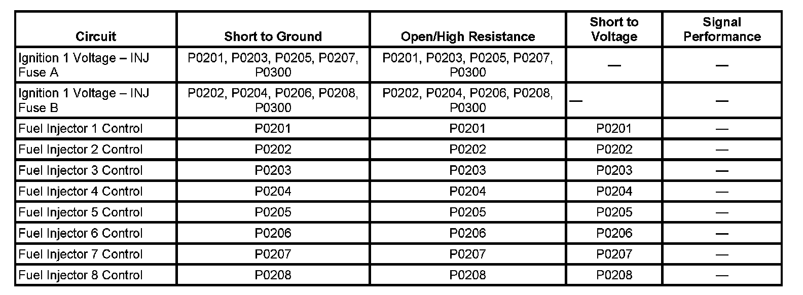

P0208
DTC P0201, P0202, P0203, P0204, P0205, P0206, P0207, or P0208
DTC DESCRIPTORS
DTC P0201
Injector 1 Control Circuit
DTC P0202
Injector 2 Control Circuit
DTC P0203
Injector 3 Control Circuit
DTC P0204
Injector 4 Control Circuit
DTC P0205
Injector 5 Control Circuit
DTC P0206
Injector 6 Control Circuit
DTC P0207
Injector 7 Control Circuit
DTC P0208
Injector 8 Control Circuit
DIAGNOSTIC FAULT INFORMATION

Perform the Diagnostic System Check - Vehicle prior to using this diagnostic procedure. Initial Inspection and Diagnostic Overview
CIRCUIT/SYSTEM DESCRIPTION
The control module enables the appropriate fuel injector pulse for each cylinder. Ignition voltage is supplied to the fuel injectors. The control module controls each fuel injector by grounding the control circuit via a solid state device called a driver. The control module monitors the status of each driver. If the control module detects an incorrect voltage for the commanded state of the driver, a fuel injector control circuit DTC sets.
CONDITIONS FOR RUNNING THE DTC
- The engine is running.
- The ignition voltage is more than 11 volts.
- DTC P0201-P0208 runs continuously when the above conditions are met.
CONDITIONS FOR SETTING THE DTC
- The control module detects an incorrect voltage on the fuel injector control circuit.
- The above condition is met for 1 second.
ACTION TAKEN WHEN THE DTC SETS
DTCs P0201, P0202, P0203, P0204, P0205, P0206, P0207, and P0208 are Type B DTCs.
CONDITIONS FOR CLEARING THE MIL/DTC
DTCs P0201, P0202, P0203, P0204, P0205, P0206, P0207, and P0208 are Type B DTCs.
DIAGNOSTIC AIDS
Performing the Fuel Injector Diagnosis may help isolate an intermittent condition. Refer to Fuel Injector Diagnosis. Fuel Injector Diagnosis
CIRCUIT/SYSTEM TESTING
1. Ignition OFF, disconnect the affected fuel injector harness connector at the fuel injector.
2. Ignition ON, verify that a test lamp illuminates between the ignition 1 voltage circuit terminal A and ground.
- If the test lamp does not illuminate, test the ignition 1 voltage circuit for a short to ground or an open/high resistance. If the circuit tests normal and the ignition 1 voltage circuit fuse is open, test or replace the fuel injector.
3. Connect the J 34730-405 between the control circuit terminal B and the ignition 1 voltage circuit terminal A.
4. Command the fuel injector ON and OFF with a scan tool. The test lamp should turn ON and OFF when changing between the commanded states.
- If the test lamp is always ON, test the control circuit for a short to ground. If the circuit tests normal, replace the engine control module (ECM).
- If the test lamp is always OFF, test the control circuit for a short to voltage or an open/high resistance. If the circuit tests normal, replace the ECM.
5. If all circuits test normal, test or replace the fuel injector.
COMPONENT TESTING
IMPORTANT: The engine coolant temperature (ECT) sensor must be between 10-32°C (50-90°F) for an accurate measurement.
Measure for 11-14 ohms of resistance between the terminals of the fuel injector.
- If the resistance is not within the specified range, replace the fuel injector.
REPAIR INSTRUCTIONS
Perform the Diagnostic Repair Verification after completing the diagnostic procedure.
- Control Module References for ECM replacement, setup, and programming
- Fuel Injector Replacement. Verification Tests